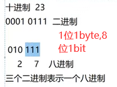

Project Start
单例模式，讲得很好！只允许创建一个instance就是单例，如只有一个回收站，不能创建第二个回收站，真的讲得好，循序渐进
format还能这样用
{0}的0不能写成i会报错做完了！终于，磕磕不出抄，抄不出，复制，一条一条对，理解思路，复现，缺知识点找youtube真的有用的，国语英语都好Youtube质量高
是选择看youtube千峰那个？还是继续后面，很明显我还有漏洞，把面向对象打好基础把，用这个千峰的视频，讲的真的好Project End
python知识补全
十转二
print()会自动转为十进制结果
二转十、八、十六


说实话，有project真的很好，不过之前的debug是学java浙大翁老师教的，还有一些杂七杂八是youtube看的，有一些思路和方法确实是61a之外带来的 今天这里有pycharm的 ctrl+单击方法，进去看，vscode狗屎纯代码，pycharm人家有注释和使用方法；pycharm厉害但是也要有人教啊操， 单击齿轮，点击show members， 点聚焦的那个点，反正就会看到对应数据类型的所有方法，这里已经是OOP的事情了